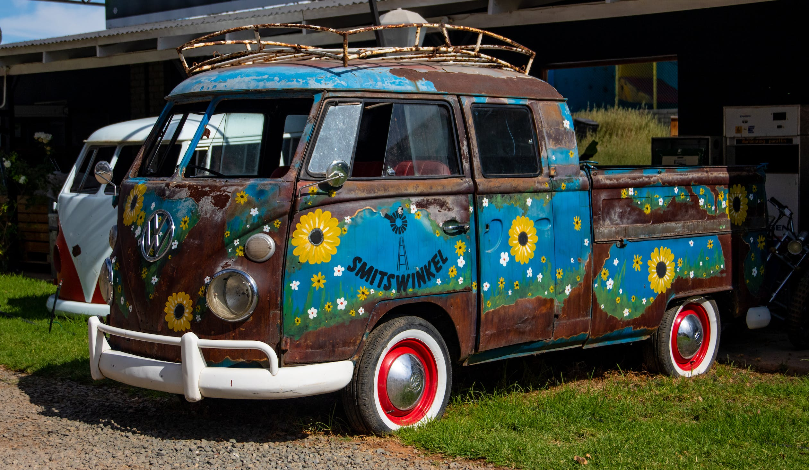
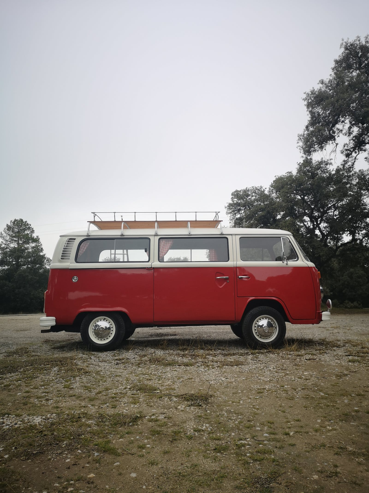
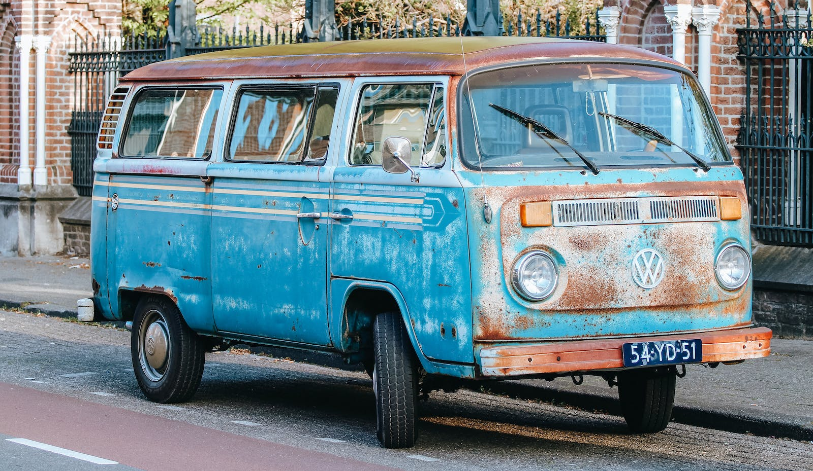

VW Bus
The Bus through the years
The VW bus started in 1947 with the first design made by Ben Pon.
The bus has gone through many designs throughout the years:
- First Generation: 1949–1967
- Second Generation: 1967–1979
- Third Generation: 1979–1992
- Fourth Generation: 1990–2003
- Fifth Generation: 2003–2015
- Sixth Generation: 2015–Present
Buses are just plain cool, imagine pulling up to any event with 8 of your closest friends in tow. These vehicles are so adaptable;
you can set them up as campers, pickup trucks, transporters etc.
VW Buses
  